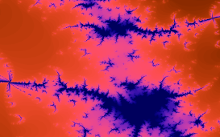
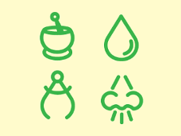

ColorPal CLI!
ColorPal CLI is a command-line version of ColorPal, my HTML5 color palette generator.
Demo!
$ node cpal.js -f hex -s 8 MyImage.png
#07070b
#bac0c4
#d1bd66
#7e8899
#696964
#c4b441
#65683e
#394434
Get it!
npm install -g canvas requirejs # install dependencies
git clone git@github.com:mwcz/colorpal-cli.git
cd colorpal-cli
Use it!
To display the help text, simply run the command without any arguments.
node cpal.js
Generate a color palette from an image! :)
USAGE: node cpal.js IMAGE
Options:
-s, --size Generate a fixed size palette; you specify the number of colors you want.
-d, --dynamic Generate a palette, sized dynamically based on the color diversity of the image; you can optionally specify a number from 0.0 to 1.0, where larger numbers increase the number of colors.
-f, --format Specify the output format. Available formats are: scss, sass, json, less, rgb, hex
Let’s dive right in by generating palettes from the sample images included with the project.
node cpal.js images/hugepic.png
[ [ 144, 43, 178 ],
[ 37, 10, 146 ],
[ 171, 52, 6 ],
[ 11, 3, 85 ],
[ 238, 72, 120 ],
[ 219, 66, 32 ] ]
To visualize what just happened, ColorPal turned this:

Into this:

Let’s try again with a different image.
node cpal.js images/issue3.png
[ [ 165, 219, 144 ], [ 58, 181, 75 ], [ 254, 250, 203 ] ]
Only three colors this time? This image has very few colors, so ColorPal decided to create a smaller palette.


To generate a specific number of colors, use the -s option.
# generate 8 colors from the same image
node cpal.js -s 8 images/issue3.png
You can also specify the output format. json is the default, but several others are available.
Hex output:
node cpal.js images/issue3.png -f hex
#a5db90
#3ab54b
#fefacb
LESS output:
node cpal.js images/issue3.png -f less
@color0: rgb(165,219,144);
@color1: rgb(58,181,75);
@color2: rgb(254,250,203);
SCSS/SASS output:
node cpal.js images/issue3.png -f scss
$color0: rgb(165,219,144);
$color1: rgb(58,181,75);
$color2: rgb(254,250,203);
ColorPal also has a web interface which you might find more convenient, depending on your needs. The command-line utility is very convenient if you need to automate palette generation for a large number of images.
All the code is available on GitHub. Bug reports and pull requests are much appreciated. :)